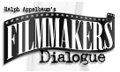

DVDs Missing in Action
Too many great titles are still missing from DVD. Here are a few random choices that I would love to see on DVD. Perhaps the less obvious are more interesting. Do you have any favorites missing in action? You can add your suggestions directly to the DVDMIA database by clicking DVDMIA and filling in the form.
The Master List By Decade
1910-1949
1950-59 1960-69 1970-79 1980-89 1990-Present
Broadband Users: Click for Full
Alphabetical Listing
December 3, 2000\
John Wayne and William Holden directed by John Ford: that's The Horse Soldiers (1959), a DVDMIA noted by Monte Festog of Frederick, Maryland.
Where are all the Alan Ladd films? Anne-Laure Touron of Naples Florida appears to be a bid Ladd fan, lamenting the absence of such Ladd flicks as Calcutta (1947), Saigon (1948), Santiago (1949) and The Great Gatsby (1949).
In Hartford, Connecticut, Edward Holmes notes the absence of Fellini films 8 1/2 (1963) and The Clowns (1971).
Maitresse (1976), a Barbet Schroeder film, would make a nice addition to the DVD catalog, notes Harlen Welsh of Boston, Mass.
November 13, 2000\
Good call from Vern Dias of Southlake, Texas:. Around the World in Eighty Days (1956) hasn't made it around to DVD yet.
The Producers (1968) is a "little blue blanket" of hilarity before Mel Brooks was ubiquitous. Zero Mostel puts Gene Wilder through hoops.
November 1, 2000\
There are plenty of vintage films still missing from DVD. Landon Henricks of Napoleon, Ohio is looking for storm of releases for films like The Thief of Bagdad(1940), the classic fantasy from producer Alexander Korda,, Lucky Jordan (1942) starring Alan Ladd as a gangster and Pillow to Post (1945) starring luscious Ida Lupino is a daffy comedy.
Hankering to hear "the witnesses" again, Diego Sada, Jr. of Monterrey, Mexico wants a release of Reds (1981).
The template for Kurosawa's Ran, Kagemusha (1980) is still absent from DVD notes Søren Laursen of Denmark.
Looking for the widescreen release of It's a Mad, Mad, Mad, Mad World (1963) is Tony Valdiconza of Chula Valley, CA.
October 19, 2000\
ISF Tech Extraordinary Jim Doolittle from Boston, Massachusetts laments King Kong (1933) missing on DVD. Let's hope Kong doesn't get riled up the slight.
Göran Berselius in Stockholm, Sweden would like a DVD release of the tight scifi from Richard Stanley, Hardware (1990). Göran also thinks Razorback (1984) an Australian horror exercise directed by Russell Mulcahy.
Boondock Saints (1999) did you say. Interesting title for a film Richard Kreiling of Boca Raton, Florida would like to see on DVD.
October 12, 2000\
Ron Howard directed the underrated Willow (1988), a good candidate for a DVD release as noted by Scott Burchfield of Auburn Hlils, Michigan. This is another of the Lucas controlled titles absent from DVD. Come on, George, let your movies go.
Christmas in July (1940), just one of the wonderful Preston Sturges comedies, is absent from DVD. In fact, all of Sturges' comic gems have not yet been released on DVD. How about a box set as a gift to movie lovers.
October 7, 2000\
Bill Bailhorn from Madison, Wisconsin adds a call for Zulu Dawn (1979). This is the "prequel" to Zulu.
Peter Yates' charming film Breaking Away (1979) still has not seen the light of DVD day. How about it Fox, could you give us a break.
Watching Marlon Brando at his most outrageous can be unpredictable, but watching Marlon Brando outdo Jack Nicholson is a necessary movie fix. So, where's The Missouri Breaks (1976), Arthur Penn's eccentric comic western. Calling MGM.
Anything with Gene Hackman, I always say. Sometimes I'm wrong, but Night Moves (1975), directed by Arthur Penn is a pretty good detective flick that would make a nice DVD. i am merely seconded the nomination by Harold Gervais, one of Chicago's finest, reviewers, that is.
September 14, 2000
We've had a big gap in listing titles readers note as Missing in Action on DVD. Here are some recent requests:
Bruce, from Shreveport, La. would like to catch Eddie and the Cruisers (1983) do their stuff on DVD.......... Neil Hinrichsen in South Africa astutely notes that Robert Altman's Short Cuts (1993) still has not shown up on DVD nor has the Sally Fields vehicle from Robert Benton, Places in the Heart (1984)........ Doug Anderson in Alexandria Va, thinks it's about time for a release of Miller's Crossing (1990)and The Mission (1986). Paging Robert De Niro in self flagellation mode Darek Senkow of Studio City, Ca seconds Miller's Crossing.........San Franciscan Mike Barker thinks Lindsay Anderson's O Lucky Man (1973) needs a DVD release......... .....Candy Sangster in North Hills, Ca wises mentions that lean noir Gun Crazy (1950) has not gotten the proper video treatment yet. Who are Peggy Cummins and John Doll and wasn't Joseph Lewis a great labor leader?....Diego Sada, Jr in Monterrey, Mexico thinks it's about time Reds (1981) got a special DVD treatment. Warren, can you hear us?......... Joe Luteran in Scottsdale Arizona suggests a DVD release for To Catch a Thief (1955). Hitchcock's cat burglar on the Riviera classic is probably in need of some restoration, but a good telecine man can make a big difference........Barcelona (1994), the witty Whit Stillman film, is missing in action notes Aaron Hurley in Orlando, Florida.........Lots of requests for Sweet Smell of Success (1957). The latest is from Mike Ross-Trevor. I can just taste the bilious dialogue......Howie Chen in New York City would like DVD gourmets to get a taste of Ang Lee's The Wedding Banquet (1993). Speaking of weddings, how about A Member of the Wedding (1952) from director Fred Zinnemann and starring Julie Harris.........Robert Wise's clean horror film The Haunting (1963) didn't need much more than some aggressive sound to scare movie goers out of their seats. Steve in Redondo Beach, Ca thinks it should get it's widescreen DVD due......Jon H. in Madison Wisconsin thinks we could use a DVD of Dustin Hoffman in Straight Time (1978)............Hendrik Freyling in Neuenhof, Switzerland asks for Mine Own Executioner (1947).......... An early Neil Jordan work, A Company of Wolves, hasn't seen the light of DVD yet, notes James Stephens in Atlanta, Ga...........Tom McCullough would like to see River's Edge (1987). Whatever to Crispin Glover?........Marshall Deutalbaum thinks Robert Mitchum should get another DVD chance with Track of the Cat (1954) from veteran director William Wellman.......Speaking of Wellman, how about Beau Geste (1939)..........Michael Whyte of Rockford, Ill thinks Peter Fonda's The Hired Hand should get a DVD shot.....Christian Edinger wises chooses Blow Out (1981) as DVD release candidate. Brian De Palma's excellent thriller with lean and hungry John Travolta.


A hallmark of Film Threat Magazine is irreverence. The transition from print to the Internet leaves
the acid base in tact. Humorous criticism with a vengeance.

Cinemedia is
the largest film and media directory with over 25,000 links.

Home to The American Society of Cinematographers. Includes features from
American Cinematographer Magazine and more...
 Brad Lang continues to add more interesting material to the extensive
collection at Classic
Movies. Everything from actors and actress to your favorite directors is
linked at the site.
Brad Lang continues to add more interesting material to the extensive
collection at Classic
Movies. Everything from actors and actress to your favorite directors is
linked at the site.

News, information, features about current films in theaters and in the
pipeline. Easy to use interface.

The official site for information about the great comic director. A treat for connoisseurs of
classic Hollywood madcap.

The home of director Kevin Smith, replete with inside info on his films
like Clerks, Mall Rats, Chasing Amy and Dogma.

First Run Features boasts a library of independent and foreign features available on DVD
and VHS. Check out their web site for catalog details.

Ralph Appelbaum's Filmmaker's Dialogue is the premiere movie class in
New York. Watch new movies and talk about them with the stars, directors and writers afterwards.
It's an exciting ten week series in the heart of New York City. Mention Films on Disc and get a
special introductory discount. Tuesday and Wednesday series begins October 3rd. Call 212 627 2653

Excellent resource for movie review links, with many early looks.
Bruce Hershenson Move Posters

Bruce Hershenson has been running
successful movie poster auctions for a number of years, most notably for Christies. His site
includes many images and a huge variety of posters for sales from his periodic
catalogs.
Choko
Movie Posters

The popular Paris movie poster store
makes it's way to the Internet with an outstanding selection of French Movie Posters. Many
beautiful images on display in a searchable data base.

The home of John Tisch's invaluable Poster Price Almanac. Every serious poster collector
uses the Almanac as a reference.